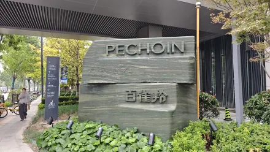

1. 百雀羚集团
源照片：百雀羚.webp
网页地址：上海市黄浦区会馆街51号绿地外滩中心T3楼25~29楼
PECHOIN及百雀羚石牌清楚，旁边导览标明T3办公楼；作为园区外部品牌标识，不描述为楼上总部入口。
处理：新增照片，原文件保留。
文件记录与校验信息
原路径：无
采用路径：assets/points/baiqueling-group-20261013.webp
源文件：E:\OneDrive\Desktop\稼享指南网页版本\稼享指南网页\20261013_重命名图片\webp照片文件\百雀羚.webp
原尺寸：4096 × 2304；514.7 KB
网页版本：1600 × 900；355.0 KB（仅缩放压缩，不裁切、不改色）
源文件SHA-256：b2e31395906cff6b410eac32ccf9b143d69db6f12fdac016a72f51154cd8d0c6
原点位没有照片

